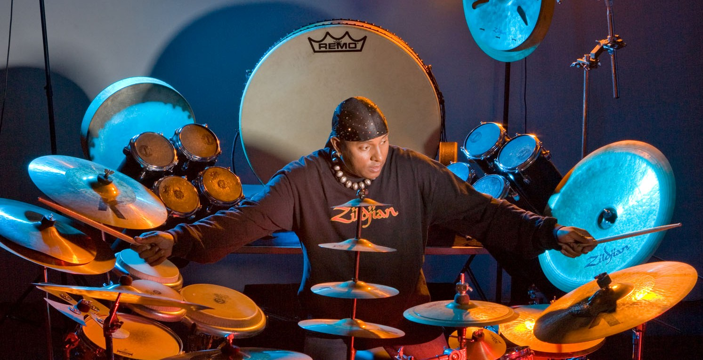

Finding the pulse
Growing up in a musical family, Sivamani began performing as a young teenager and developed a distinctive approach to percussion.
Anandan "Drums" Sivamani (born 1 December 1959 in Chennai, Tamil Nadu) is a world-renowned Indian percussionist, drummer, and music composer. Celebrated for his exceptional showmanship, high-energy live performances, and ability to craft rhythms out of everyday household objects, he is widely regarded as one of India's iconic musical masters. His invention and unmistakable energy to every beat. Step into the world of one of India's most celebrated percussionists.





Anandan Sivamani grew up in Chennai in a musical family. His father, S. M. Anandan, was a professional drummer who introduced him to music when he was seven. At first, his father hoped he would choose a different path; when he saw the young Sivamani playing with such focus, he recognized that music was his calling.
As a child, Sivamani was fascinated by the rhythms around him. He started his musical career at 12, learning through close contact with working musicians and the world of recording and performance. Those early years shaped the open-minded percussionist audiences know today.
Sivamani ’s career has been nothing but an extraordinary journey. He has shared
the
stage
with
the music legends in India and abroad. His earliest experiments with music were with
Carnatic
maestros including KunnakudiVaidyanathan, T. V. Gopalakrishnan,
ValliyapattiSubramaniam
andPazhanivel, and L. Shankar.
Apart from sharing the stage with Zakir Hussain and TrilokGurtu
,
he
has collaborated with
several musicians including M.S. Viswanathan, Illayaraja, A. R.
Rahman
and Louis
Banks.Sivamanihas done world tours with A. R. Rahman
and
collaborated with him for Bombay
Dreams. He has also been a part of a musical group called Shraddha
which comprises Shankar
Mahadevan, Hariharan, U. Srinivas and Loy Mendonsa. Shivamani has a band called "Asia Electrik"
with Niladri Kumar, Louiz Banks and Ravi Chari.
Sivamani has played drums for many film score composers hailing from Kollywood. He has
played
drums for many Indian films including Roja, Rang De Basanti,
Swades,
Taal, Lagaan, Dil Se, Guru,
Kabul Express and Rockstar. Some of the songs that he has contributed to include "KadhalRojave”,
"PudhuVellaiMalai", “ChaiyaChaiya” and “NadaanParinde”. In 1990, he shared the stage
with
Billy
Cobham at Mumbai's Rang Bhavan.

Sivamani has performed in Dubai, Moscow, New York, Doha and Toronto. During the Mumbai
Festival
2005, Coca-Cola India invited him to perform at the Limca Fresh Face 2005 event, where he
created melody from Limca bottles. He has also worked on Galli Galli Sim Sim, an educational
series on Pogo and Cartoon Network.
He was affiliatedas a drummerand supporter for Chennai Super Kings of Indian Premier League
(IPL),from 2008 to 2016. He endorses five biggest international brands in the live music
industry, which includes Zildjian, Pearl, Roland, AKG and Remo. He is a member of world
music
outfits – the Zakir Hussain World Drums Ensemble, SILK, Asia Electrik and Shraddha.
From Indian classical rhythms to jazz, film scores and global collaborations, Sivamani's performances are powered by spontaneity. The result is music that feels both deeply rooted and alive in the moment.


Growing up in a musical family, Sivamani began performing as a young teenager and developed a distinctive approach to percussion.
He shared stages and projects with artists including A. R. Rahman, Zakir Hussain, Trilok Gurtu and many more.
The Government of India recognized his contribution to music with one of the country's highest civilian honours.


The official website of renowned Indian percussionist Anandan "Drums" Sivamani serves as a comprehensive digital portfolio and a gateway to his extraordinary musical journey. Designed with a clean and engaging layout, the website introduces visitors to his artistic philosophy, summarized in his words: "Becoming a drummer is more of a choice than chance for me." It chronicles his remarkable journey from a seven-year-old prodigy, trained by his father, S. M. Anandan, to an internationally celebrated world percussionist. Through its dedicated Biography and Milestones sections, the platform explores his formative years in Chennai, mentorship under renowned musicians, and iconic collaborations with A. R. Rahman on landmark film scores such as Roja and Lagaan. It also highlights his prestigious achievements, including the Kalaimamani Award in 2009 and the Padma Shri in 2019, alongside his work as a film composer and his involvement in fusion ensembles such as Asia Electrik and Shraddha.
Beyond biographical storytelling, the website functions as an interactive archive and professional platform for fans, music enthusiasts, and event organizers. Visitors can explore solo releases and collaborative works in the Albums section, browse photographs from international concerts and studio sessions in the Gallery, and connect with fellow percussion enthusiasts through the Fan Club. Finally, the Contact section provides communication channels for commercial, media, and event opportunities, including official management representation through AMG India.
Behind every extraordinary rhythm is a story of family, inspiration, heritage and a lifelong connection to music.
A collection of memories that will stay forever.

The family foundation that introduced Sivamani to the world of rhythm.
Renowned drummer in the South Indian film industry and Sivamani's first musical inspiration.
A part of his family roots and upbringing.
A personal journey shaped by relationships and a shared connection with music.
Runa Rizvi (also known as Runa Rizvi Sivamani) is an accomplished Indian classical, ghazal, Sufi, and playback singer trained in the Kalavant Gharana. The two married in a private ceremony in Mumbai on November 10, 2014, and frequently perform and collaborate together—blending Sivamani's energetic percussion with Runa's expressive Sufi, ghazal, classical, and fusion vocals across live shows and film project
The next generation of the Sivamani family.
A percussionist and music programmer who has worked with A. R. Rahman's musical team.
Sivamani has two children from his first marriage.
Music runs in his blood. His journey began with his father's guidance and grew into a lifetime dedicated to rhythm.
THE SIVAMANI LEGACY“Rhythm is everything, everywhere.”— Sivamani · TED Performance